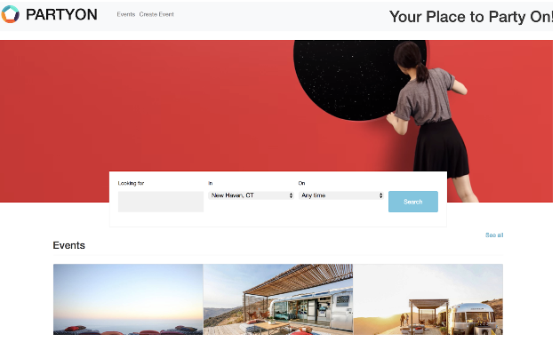
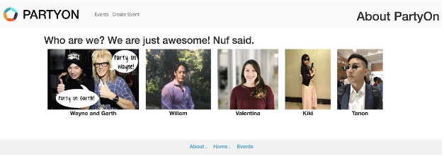

1. As a user, I can access the Home page: 3 story points
Details: The home page welcomes the user to our website, and it clearly demonstrates the purpose of our application as an event management and ticketing tool. It promotes our brand through our logo, and it provides a menu of links through which to navigate the site. It includes a link for creating events, a clear placeholder for upcoming events, and a search bar.
2. As a user, I can access the About page: 2 story points
Details: The about page is a page that tells the user about who we are. It has a direct link from the home page, and it displays the name of the group members with their headshots.
The burndown chart shows that initially, we took a long time to set up the server. The initial story point was the setup of the project and the display of a home page that was under construction. For the next 3 days, we were getting acquainted with the system and continued the setup of the server and database. The rest of the work was completed on the final 3 days.
This week we had two team meetings. The first meeting on Wednesday was to complete and confirm all tool installations and setup. During our second meeting on Thursday, we held a Sprint Demo and a Retrospective. During the Sprint Demo, we previewed our website and discussed the style and design for the current pages. Then during the Retrospective, we reflected on the process and norms for the team. We realized that we underestimated the setup time for the project this week. Specifically, it took us longer than expected to download the server and install the SQL database. As a result, we felt like we overestimated our capacity for the week. However, we were still able to complete the two stories in our backlog (the Home page and the About page). In terms of process management, we felt like we efficiently distributed the work across the team as we had each member own specific tasks such as design, coding, and documentation.